Splitting Hair(s) Slides: DNA Deep Dive Part 1 of 2
The 1971 Biological Evidence, the 2001–2002 Tie Profile, and the Thirteen Men in the File
An audit of the biological and trace evidence from Northwest Orient Flight 305—tracing the Las Vegas destruction of the eight Raleigh filter cigarette butts, the thirty-year chain of custody of the Seat 18-E headrest hair slide (Q2) and suspect hair slide (K7), the 2001–2002 nuclear STR DNA mixture obtained from the black J.C. Penney clip-on tie and clip (Q40/Q41), the thirteen men tested or slated for testing by the FBI, and the five FOIA requests targeting the unreleased 1D 889/890 lab bench notes.
SE 164A-81-1A 899) graded Subfiles 1–500—and left the remaining 556 subfiles unreviewed after a dropped August 2004 handoff—is covered in Part 2.Eight butts, one hair slide, a three-donor tie mixture, and thirteen suspects
The short version. Each point is built out in the sections that follow, and every FBI statement carries a Part / PDF page / Bates citation linked to the FBI Vault.
1. The 1971 biological items and what happened to them (§2). After Flight 305 landed in Reno on November 24, 1971, the FBI recovered eight Raleigh filter cigarette butts from the aft cabin ashtray (Q1, Lab No. PC-H3225 MC, 16/66/4370), two Caucasian hairs from the Seat 18-E headrest towel mounted on a microscope slide (Q2, 16/66–67/4370–71), the black J.C. Penney "Towncraft" clip-on tie and tie clip (Q40 & Q41, 1B7, 52/5–6/21604, 24665), the boarding ticket (1B21), and four plastic drink glasses. A May 19, 1998 Seattle EC reports that the cigarette butts had been "destroyed years earlier in Las Vegas" (51/196/21311). The Q2 headrest hair was found microscopically dissimilar to a Los Angeles suspect in April 1974 (34/186–187/12807–08) and a Toomsuba, Mississippi suspect in September 1984 (47/227–228/19547–48); in July 2002, Los Angeles shipped Seattle exhibit LA 164-497-1A56 containing "a glass slide with a hair sample" (52/35/21636).
2. The 2001–2002 tie testing and how the Lab's reading shifted (§3). Resubmitted on August 23, 2001 (52/2–3/21601–02), combined specimens Q40/Q41 were amplified via PCR on April 2, 2002 (Lab No. 010904012 HL MD) across the 9 STR loci + Amelogenin in the AmpFlSTR Profiler Plus kit, yielding DNA from "more than one individual" with male DNA present (52/23–24/21624–25). Treated in August 2002 as DNA that "likely belongs to the subject or owner" (52/38/21641), the profile was downgraded in 2006 when "the Laboratory Division determined the degraded DNA sample could only be used to exclude individuals as possible donors" (52/284/21966), and was described in December 2010 as containing "DNA from three or more individuals" with a "major contributor" and "minor contributors" (77/297/33659; "the two minor contributors" at 77/313/33675).
3. What the 9-locus Profiler Plus summary means—and why 1D 890 is a primary FOIA target (§4 & §6). In 2001–2002, the FBI Laboratory used two separate PCR kits for a 13-locus CODIS profile (Profiler Plus for 9 STR loci + Amelogenin, and COfiler for 4 additional STR loci + 2 overlap loci), but reported only Profiler Plus on Q40/Q41 (Tie/Clip, 52/24/21625)—likely because "Due to the differences in sample quality and/or quantity, amplification may not be attempted using both kits" (77/297/33659) [inference]. Because the April 2, 2002 report prints no allele numbers, releasing the 39-page bench file and CD (1D 890, 89/219/39743) would provide the tie's 9-locus allele calls and peak heights for direct suspect exclusions and probabilistic genotyping (STRMix / TrueAllele).
4. CODIS entry and the 2010–2011 "not eligible for entry into CODIS" boilerplate (§4). The Q40/Q41 (Tie/Clip) profile was entered into CODIS in April 2002 (52/24/21625) and searched across all 50 states with negative results by August 4, 2004 (77/239/33594). The sentence in the 2010 (L.D. Cooper) and 2011 (Gossett) Lab reports stating that "The STR typing results obtained from the tested specimens are not eligible for entry into the Combined DNA Index System (CODIS)" (77/297/33659; 77/307/33669) refers to the tested suspect family swabs (K7/K9) and suspect personal items (Q57–Q62), not to Q40/Q41 (Tie/Clip).
5. Every suspect in the DNA record—13 suspects across three groups (§5). Five men came from the 2004 review of Subfiles 1–500 + Sub 1055 (77/239–248/33594–33604): Duane Lorin Weber (4 personal items excluded 77/281/33641), Sheridan Peterson (1B6 & 52 pp. notes 1D 14 logged [inference], 77/166/33499; 89/196/39641, report unreleased), Jason Thomas Langseth (excluded from mixture 77/263/33622), Fred Angelo Catalano (lead set 77/245/33601, no return), and Richard Floyd McCoy Jr. (witness/relative declined in 2004, 77/253/33612). Seven suspects came via 2003–2011 tips: Arthur Burge Derham (no DNA on denture/hair/hat, eliminated by prints 78/185/34045), South Lake Tahoe Suspect (Sub 1059, excluded from mixture 77/267/33626), Barbara / Robert Dayton (hairs/brush/envelopes logged 52/219–221/21891–93, no Lab report), Lyle Collins Franklin (dropped 52/226–227/21898–99), Kenneth Peter Christiansen (7 tubes logged under Lab #070816002 [inference], 77/304/33666, report unreleased), Lynn Doyle ("L.D.") Cooper (excluded as major contributor via relatives K7/K9 at 77/297/33659; 19 items logged under 110822002 QB at 77/315/33677), and William Pratt Gossett (excluded from mixture via watch Q58 at 77/306/33668). A thirteenth suspect, "X", was eliminated on May 14, 2003 off his circa-1971 photo because "Cooper was not balding" (52/94/21707; 52/100/21715) before his attorney enclosed an Orchid Cellmark STR report on his bloodstained handkerchief (52/102–105/21717–20).
6. What remains open: 1D 889 , 1D 890 , missing 2001 trace results, and the 52/23 disposition notice (§6). The September 12, 2001 trace report (52/7–8/21606–07) omits its results text, Seattle's 1A index logs withheld Lab files 1D 889 (19 pp.) and 1D 890 (39 PAGES, 1 CD, 1 FILM, 89/219/39743), and page 1 of the 2002 tie report prints the PROCESSED DNA SAMPLES: SHOULD BE REFRIGERATED/FROZEN disposition paragraph (52/23/21624)—standard Lab boilerplate save for the phrase "and the probed DNA membrane."
Across forty years of testing, the FBI Laboratory never obtained an uncontested, single-source DNA profile from Flight 305: the 1971 Raleigh butts were destroyed in Las Vegas, the 1971 headrest hair slide (Q2) has no DNA report in the released files, and the 2001–2002 tie extract (Q40/Q41, Tie/Clip) proved to be a 9-locus, 3+ contributor mixture that excluded three tested men in full (Langseth, South Lake Tahoe Sub 1059, and Gossett), excluded L.D. Cooper as the major contributor, and excluded four personal items from Duane Weber. If the FOIA request for 1D 890 (39 PAGES, 1 CD, 1 FILM) succeeds, researchers would obtain the 9-locus allele calls and electropherogram peak heights from the tie to run independent suspect exclusions and modern probabilistic mixture deconvolution.
The 1971 items and what happened to them
Five categories of physical items handled or left behind by the hijacker on November 24, 1971 carried potential biological or contact trace evidence. Only the black clip-on tie and clip (Q40/Q41) ever produced a nuclear DNA profile in the released files.
| 1971 ITEM / ID | 1971 LAB EXAM | WHAT THE FBI FOUND IN 1971–1984 | ULTIMATE FATE IN THE FILES |
|---|---|---|---|
| Q1 · Ashtray contents 8 Raleigh filter butts | PC-H3225 MC12/9/1971 · 16/66/4370 | Collected from the aft cabin ashtray at Reno by Las Vegas agents; logged into Las Vegas bulky evidence ( LV164-60, 41/28/11396). | Destroyed in Las Vegas A 5/19/1998 Seattle EC reports the butts had been "destroyed years earlier in Las Vegas" (51/196/21311). |
| Q2 · Seat 18-E headrest towel 2 hairs on slide ( 1B27) | PC-H3225 MC12/9/1971 · 16/66/4370 | Lab recovered "a brown head hair clipping and a brown limb hair both of Caucasian origin," mounted on a glass microscope slide (16/67/4371). Dissimilar to LA suspect (4/19/1974, 34/186/12807) and Toomsuba, MS suspect (9/24/1984, 40907024 S/D WKLL, 47/227/19547). | Conflicting trail · LA 1A56 On 2/19/2002 Seattle noted LV had no record of the slide (52/16/21615). On 7/23/2002 LA shipped LA 164-497-1A56 ("aglass slide with a hair sample," 52/35/21636). No mtDNA report in files. |
| Q40 & Q41 · Black clip-on tie & clip Seat 18-E ( SE 1B7) | PC-H5141 MC GX3/8/1972 · 52/5–6/21604, 24665 | March 8, 1972 trace exam found "No stains having the appearance of body fluids" and "No hairs or foreign textile fibers" on Q40 (tie) or Q41(tie clip) (52/6/24665). | Resubmitted 8/23/2001 Combined Q40/Q41 yielded the9-locus Profiler Plus DNAmixture on 4/2/2002 ( Lab#010904012 HL MD, 52/23–24/21624–25). |
| Airline ticket Boarding pass ( SE 1B21) | Latent print & DNA sub. 1971 & 8/23/2001 | Retained in Seattle evidence (1B21)and resubmitted alongside the tie on 8/23/2001 for DNA analysis and latent print exam "if appropriate" (52/2–3/21601–02). | Not DNA-typed · No prints Listed under "Also Submitted" on 4/2/2002 with "No other DNA examinations were conducted" (52/23–24/21624–25); no prints developed on 10/3/2003 (52/131/21755). |
| Four plastic drink glasses Flight 305 cabin | Latent print exams Nov–Dec 1971 | Processed for latent fingerprints in 1971 alongside other cabin items. | No DNA record in files Never submitted for DNA testing in the released 2001–2011 laboratory serials. |
1. Q1 — The eight Raleigh filter cigarette butts (16/66/4370; 51/196/21311)
When Flight 305 landed in Reno on the night of November 24, 1971, Las Vegas Division agents collected the contents of the aft cabin ashtray (Q1: eight Raleigh filter-tip cigarette butts) and the Seat 18-E headrest cover (Q2). Under Lab No. PC-H3225 MC (report dated December 9, 1971, 16/66/4370), the FBI Laboratory examined the ashtray contents and returned them to Las Vegas (LV 164- 60), where they were logged into the bulky evidence room (41/28/11396). Had those eight filter tips survived into the PCR era, they would have been the strongest candidate for single-donor salivary DNA from the hijacker. Instead, a May 19, 1998 Seattle EC records that when the FBI DNA Unit agreed to analyze the cigarette butts, it was discovered that the evidence had been "destroyed years earlier in Las Vegas" (51/196/21311):
May 19, 1998 Seattle EC recording destruction of the 1971 cigarette butts in Las Vegas Part 51 p.196 · Bates 21311 (cropped & highlighted)
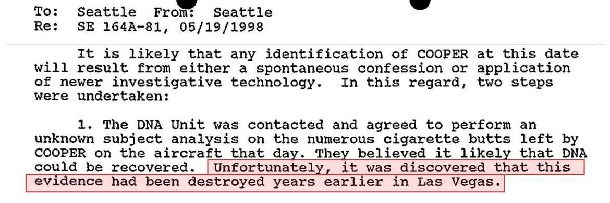
May 19, 1998 Seattle EC (51/196/21311) reporting that the DNA Unit agreed to perform an unknown-subject DNA analysis on the Flight 305 cigarette butts, but "Unfortunately, it was discovered that this evidence had been destroyed years earlier in Las Vegas."
2. Q2 — The Seat 18-E headrest hair slide: routing map, LA 1A56, and where the slide likely is now
In the December 9, 1971 report (PC-H3225 MC, 16/66–67/4370–71), the Laboratory recovered "a brown head hair clipping and a brown limb hair both of Caucasian origin" from the Seat 18-E headrest towel (Q2), mounted them on a glass microscope slide, and returned Q2 to SAC, Las Vegas (164-60). (The complete 9-row chronological table of every serial mentioning the hair slide is included in the FBI Source Companion.) Across 1972–1984, the files record three comparison episodes:
April 21, 1972 (Richard Floyd McCoy Jr. — planned only, 25/33/8007 ): Following McCoy's arrest (4/9/1972), Salt Lake City and Seattle noted the brown hair "was very likely in possession of Las Vegas" and planned to have Las Vegas forward it to the Lab for comparison with McCoy's hair. No resulting Lab report appears in the files. April 19, 1974 (Los Angeles suspect K7 — dissimilar, 34/186–187/12807–08 ): Comparing Q2 (resubmitted by Las Vegas on 4/5/1974) against a Los Angeles suspect's head hair sample (K7, submitted by LA 164-497 on 3/27/1974), the Lab found Q2 "microscopically dissimilar." Crucially, while the transmittal form is addressed at the top To: SAC, Los Angeles (164- 497), its body text states that "Specimen K7 is being returned to the Los Angeles field office" while "The 'Resubmitted' glass microscope slide is being returned to the Las Vegas field office" (34/187/12808). September 24, 1984 (Toomsuba, MS suspect K7–K9 — dissimilar, 47/227–228/19547–48 ): Proving Las Vegas received Q2 back in 1974, Las Vegas resubmitted "RESUBMITTED GLASS MICROSCOPE SLIDE, FROM PC - H 3225 MC" (Lab No. 40918030 S WK, received 9/18/1984, 47/227/19547) for comparison against hairs (K7–K9, Lab No. 40907024 S/D WK LL; Jackson submission memo at 47/243/19635) from a Toomsuba, Mississippi suspect (name redacted on 47/227–228/19547–48; identified in researcher indices outside the page text as Orville Andrew Lyons). The Lab found Q2 "dissimilar to the hairs in the K9 head hair sample" and stated: "the resubmitted glass microscope slide will be returned as an enclosure to Las Vegas Division" (47/228/19548).
Six-Step Chronological Chain of Custody: The Hair Slide (1971 → Solid Blue/Green = Flight 305 Headrest Slide (Q2) · Dashed Amber = LA Exhibit (K7 / 1A56)
2002)
| STEP & DATE FBI SEATTLE LOS ANGELES LAS VEGAS FBI LAB (WDC) (Vault Cite) SE 164A-81 LA 164-497 LV 164-60 Microscopic Unit | |||||
|---|---|---|---|---|---|
1. Dec 3–9, 197116/66–67/4370–71 | Lab | LV sends Q2 towel ▸ Lab (12/3/71) mounts 2 hairs on Q2 Slide ▸ LV (12/9/71) | |||
2. Mar–Apr 197434/186/12807 | 3/27/1974: LA sends suspect | loose hair sample K7 ▸ Lab 4/5/1974: LV resubmits Q2 Slide ▸ Lab | |||
3. Apr 19, 197434/186–87/12807–08(Q2 ≠ LA K7) | Lab returns K7 (LA suspect | suspect hair) ▸ Los Angeles Lab returns Q2 Slide ▸ Las Vegas | |||
4. Sep 12–24, 198447/227–28/19547–48(Q2 ≠ MS K9) | 9/24/84: | 9/12/84: LV resubmits Q2 Slide ▸ Lab 9/24/84: Lab returns Q2 Slide ▸ LV (last sighting) | sighting) | ||
5. Feb 19, 200252/16/21615 | SEA asks LA to check files (because LV has no record of receipt) | ✖ LV Has No (Q1 butts also destroyed | Record of Q2 Slide destroyed in LV · 51/196) | ||
6. Jul 23, 200252/35/21636 | LA ships Vol. 6, 1A56 ▸ Seattle "a glass slide with a hair sample" | ||||
| SEATTLE: Holds LA 1A56 slide (received 7/23/2002) LAS VEGAS: 1971 Q2 slide likely lost/destroyed after 1984 |
Six-step chronological routing of the 1971 Flight 305 headrest hair slide (Q2, solid blue/green arrows) and the Los Angeles exhibit (K7 / LA 1A56, amber arrows). Full 9-row document table appears in the Companion volume.
Los Angeles EC shipping LA 164-497-1A56 ("a glass slide with a hair sample") to Seattle (7/23/2002) Part 52 p.35 · Bates 21636 (cropped & highlighted)
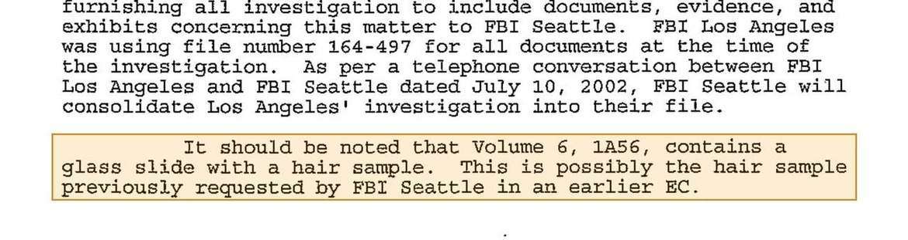
July 23, 2002 Los Angeles EC (52/35/21636) noting that "Volume 6, 1A56, contains a glass slide with a hair sample. This is possibly the hair sample previously requested by FBI Seattle in an earlier EC."
Why the August 2006 1B27 / 1B28 FD-192 sheets are not the 1971 hair slide: Later in Part 52, two FD-192 forms dated August 30, 2006 list Anticipated Disposition: DESTROY for 1B27 HAIR SAMPLES and 1B28 HAIR BRUSH (52/220– 221/21892–93). Not only is DESTROY a routine intake field on FD-192 forms (also appearing on Langseth's swabs at 77/167/33500, 1B8 at 77/168/33501, and 1B13 at 77/304/33666) rather than proof of destruction, the acquisition date (08/21/2006) and accompanying interview reports (52/214–219/21885–91) prove those items were hair samples and a hairbrush collected in August 2006 regarding deceased suspect Barbara / Robert Dayton (§5.8).
The 1971–2002 paper trail points to the original 1971 Flight 305 headrest hair slide (Q2) having been likely lost or destroyed in Las Vegas after September 1984, while leaving two possibilities for the glass slide (LA 164-497, Vol. 6, 1A56) shipped from Los Angeles to Seattle in July 2002 [inference]:
1. Why the 1971 Q2 headrest slide went back to Las Vegas in 1974 and 1984: On April 19, 1974 (34/186–187/12807–08), the FBI Lab compared Q2 (the 1971 Flight 305 headrest slide, submitted by Las Vegas) against K7 (a Los Angeles suspect's known head hair sample, submitted by Los Angeles) and stated on page 2 that " K7 is being returned to the Los Angeles field office" while "The 'Resubmitted' glass microscope slide is being returned to the Las Vegas field office" (34/187/12808). Ten years later, in September 1984, Las Vegas still held Q2, resubmitted it for the Toomsuba, Mississippi comparison, and had it returned to Las Vegas again on September 24, 1984 (47/227–228/19547–48). When Seattle checked on February 19, 2002 (52/16/21615), it noted: "Although the report indicates that this item was returned to Las Vegas with their copy of the report, Las Vegas has no record of it being received" —and Las Vegas had already destroyed the 1971 Q1 cigarette butts (51/196/21311).
2. What sits in Seattle as LA 164-497, Volume 6, 1A56 ( 52/35/21636 ) ([inference]): Because Las Vegas could not find Q2 in February 2002, Seattle asked Los Angeles—the requesting office on the 1974 comparison—to check its files (52/16/21615), and on July 23, 2002 Los Angeles shipped Volume 6, 1A56 ("a glass slide with a hair sample," 52/35/21636) to Seattle. Either (a) LA 1A56 is the 1974 Los Angeles suspect's K7 hair returned to LA 164-497 in 1974 (though note the caveat that K7 was submitted as a loose "head hair sample" on 34/186/12807 and nothing on the 1974 report states the Lab mounted K7 on a slide), or (b) Q2 (or another mounted hair slide in LA's subfile) was misrouted to Los Angeles after 1984 and has sat in Seattle's SE 164A-81-G repository since July 2002 with no subsequent mtDNA report in the released files.
The 2001–2002 testing & how the Lab's reading shifted (2002 → 2006 → 2010– 2011)
On August 23, 2001, Seattle resubmitted the black clip-on tie and clip (1B7 = Q40 & Q41) and the boarding ticket (1B21) to the FBI Laboratory in Washington, D.C. (52/2–3/21601–02). The resulting reports and internal briefings show a three-stage evolution in how the Bureau interpreted the DNA on the tie.
| DATE | DOCUMENT / LAB NO. | KEY FINDINGS & VERBATIM LANGUAGE | CITE |
|---|---|---|---|
| 8/23/2001 | Seattle Submission EC To FBI Laboratory (WDC) | Resubmits 1B7 (tie Q40 & clip Q41) and 1B21 (airline ticket) forDNA analysis, requesting the ticket go to Latent Prints afterward "if appropriate" and that the items be "photographed before testing" with prints returned to Seattle (52/3/21602). | 52/2–3/21601–02 |
| 9/12/2001 | Trace Evidence Report010823017 HL &010904012 HL | Lists two August 2001 submissions: 010823017 HL (fabric Q1 &plastic bag Q2 from the Columbia River bank, 1B23) and010904012 HL (Q40 tie, Q41 tie clip & Also SubmittedAirline ticket). Crucial gap: no trace examination results textappears on either page (page 2 contains only the closing return remark). | 52/7–8/21606–07 |
| 4/2/2002 | Nuclear DNA Report010904012 HL MDDNA Analysis I | Combined specimens Q40/Q41 (Tie/Clip) amplified via PCR at the 9STR loci + Amelogenin in the AmpFlSTR Profiler Plus kit.Result: "the presence of DNA from more than one individual" and "the presence of male DNA." Entered into CODIS. Airline ticket not DNA-tested ("No other DNA examinations were conducted"). | 52/23–24/21624–25 |
| 8/20/2002 | Seattle Three-Phase DNA Plan EC | Notes that per the FBI Lab examiner, the recovered DNA "likely belongs to the subject or owner" (52/38/21641), while media guidance states the "specific source of the recovered DNA will not be discussed" (52/39/21642). | 52/38–39/21641–42 |
| 10/3/2003 | Latent Print Report010904012 HL DX DQ | Examined Q40 (tie), Q41 (tie clip), and the Airline ticket; nolatent prints of value were developed. | 52/131–132/21755– 56 |
| ~Mar 2008 (re: 2006) | Deputy Assistant Director Note Amboy chute briefing | Reveals the 2006 Laboratory downgrade (while misdating the initial DNA recovery to 2004): "In 2006, the Laboratory Division determined the degraded DNA sample could only be used to exclude individuals as possible donors." | 52/284/21966 |
| DATE DOCUMENT / LAB NO. KEY FINDINGS & VERBATIM LANGUAGE CITE | |||
|---|---|---|---|
| 12/10/2010 & 8/16/2011 | L.D. Cooper Lab Report & Seattle EC | Lab report states: "The STR typing results from specimen Q40/Q41 indicate the presence of DNA from three or more individuals," separating "a major contributor" from "the minor contributors to specimen Q40/Q41" (77/297/33659); paraphrased by Seattle on 8/16/2011 as "the major contributor" and "the two minor contributors" (77/313/33675). | 77/297/33659 77/313/33675 |
| April 2, 2002 Nuclear DNA Report on Combined Specimens Q40/Q41 (Lab No. 010904012 HL MD, p. Part 52 p.24 · Bates 21625 (cropped & highlighted) 2) Page 2 of the April 2, 2002 DNA Analysis I report (52/24/21625, marked DNAU I - Page 1 of 1) documenting PCR amplification of Q40/Q41across the nine STR loci and amelogenin locus in the AmpFlSTR Profiler Plus kit, a multi-person mixture with male DNA present, entry into CODIS,and "No other DNA examinations were conducted." The report is a one-page summary that prints no allele calls; the b6 / b7C redactions at the top coveronly the examiner's name and phone number. How the Laboratory's reading of Q40/Q41 (Tie/Clip) evolved from 2002 to 20111. 2002–2007 ("Suitable for identification and elimination"): In the August 20, 2002 Three-Phase DNA Plan (52/38–39/21641– 42), Seattle wrote that per the FBI Lab examiner the DNA recovered from the tie "likely belongs to the subject or owner," and set out a three-step plan: (1) send the CODIS profile to all 50 states, with special attention to Oregon and Washington; (2) review each of the 1,057 suspect subfiles to identify those "not strongly eliminated"; and (3) set leads to obtain DNA samples from those identified. As late as April 30, 2007 (77/288/33650), Seattle's case summary still described the tie DNA as "suitable for entry into CODIS and for identification and elimination." 2. 2006 (Downgraded to exclusion-only): Following the early-March 2008 discovery of buried parachute fabric in Amboy, Washington, a briefing note prepared for the Deputy Assistant Director (52/284/21966) disclosed a pivotal 2006 determination by the Laboratory Division: while the briefing paper inaccurately dated the initial DNA recovery to 2004, it stated that "In 2006, the Laboratory Division determined the degraded DNA sample could only be used to exclude individuals as possible donors." 3. 2010–2011 ("DNA from three or more individuals" — a major contributor and two minor contributors): In the December 10, 2010 Nuclear DNA report on Lynn Doyle Cooper (77/297/33659), the Laboratory explicitly broke down the Q40/Q41 (Tie/Clip) mixture for the first time in the released record: "The STR typing results from specimen Q40/Q41 indicatethe presence of DNA from three or more individuals," distinguishing between "a major contributor" and "the minor contributors to specimen Q40/Q41." Eight months later, in an August 16, 2011 EC (77/313/33675), the Seattle case agent noted that L.D. Cooper "was excluded as being the [redacted] the major contributor but there was not enough comparison data to compare to the two minor contributors." |
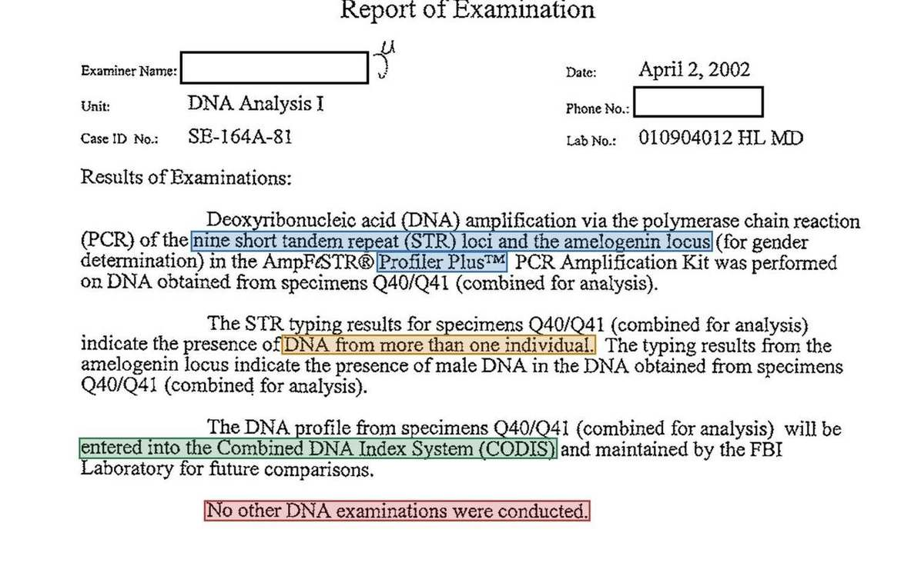
~March 2008 DAD Briefing Note (52/284) & Dec 10, 2010 Lab Report on the 3+ Donor Mixture Part 52 p.284 & Part 77 p.297 · Bates 21966 & 33659
(77/297)
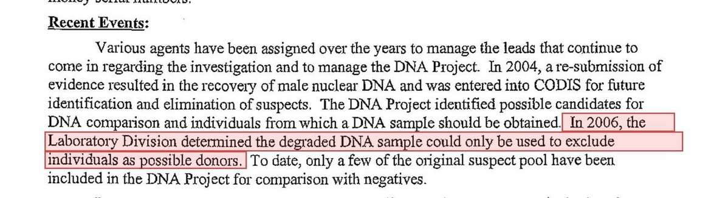
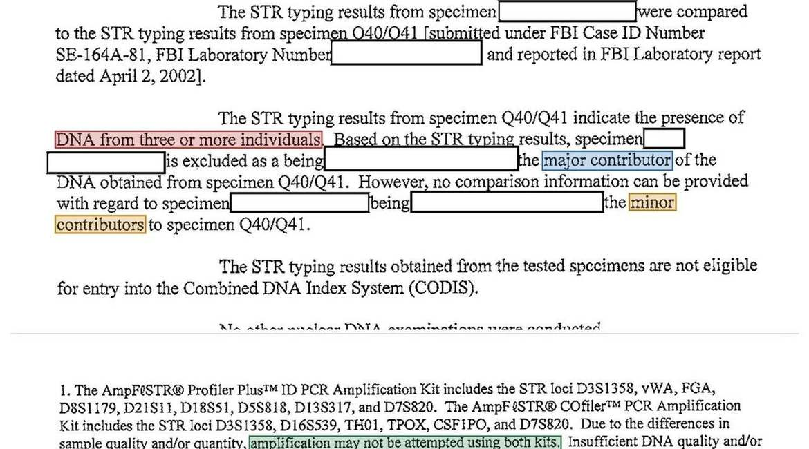
Top: ~March 2008 Deputy Assistant Director briefing note (52/284/21966) recording the 2006 determination that the degraded tie sample could only be used to exclude donors. Bottom: December 10, 2010 Nuclear DNA report (77/297/33659) identifying "DNA from three or more individuals" on Q40/Q41 ("a major contributor" and "the minor contributors to specimen Q40/Q41") and explaining in Footnote 1 why low-quality or low-quantity DNA may not be amplified using both Profiler Plus and COfiler.
CODIS, what the 9-locus (Profiler Plus) summary actually means, and why 1D 890 is a FOIA target
Why did the April 2, 2002 report list only nine STR loci on the tie instead of all thirteen CODIS core loci—and where do the actual allele numbers sit?
1. What the 9-locus AmpFlSTR Profiler Plus summary actually means
In forensic genetics, nuclear DNA profiling measures Short Tandem Repeats (STRs) —chromosomal locations (loci) where short 4-base-pair sequences repeat a variable number of times. At each locus, an individual inherits two allele repeat numbers (one from each parent), plus the sex-determining locus Amelogenin (X, Y for a male contributor; X, X for a female contributor). From November 1997 through December 2016, the FBI's National DNA Index System (NDIS / CODIS) used a standard core panel of 13 STR loci. Although single-tube 13-locus kits (such as Identifiler) existed from 2001, the FBI Laboratory then used two separate commercial multiplex PCR kits manufactured by Applied Biosystems:
| STATUS ON COOPER TIE PCR AMPLIFICATION KIT LOCUS COUNT SPECIFIC STR LOCI AMPLIFIED ( Q40/Q41) | |||
|---|---|---|---|
AmpFlSTR Profiler Plus | 9 STR loci + Amelogenin | D3S1358, vWA, FGA, D8S1179,D21S11, D18S51, D5S818, D13S317,D7S820 + Amelogenin | Reported on Q40/Q41 (4/2/2002) Reported at 52/24/21625 |
AmpFlSTR COfiler 6 STR loci Adds D16S539, TH01, TPOX, CSF1PO (plus No result reported on Q40/Q41+ Amelogenin overlap loci D3S1358 & D7S820 to confirm Reported on later suspect(4 new + 2 overlap) sample match across tubes) reference swabs (77/268/33627; 77/296/33658) | |||
Why is only Profiler Plus (9 loci) reported on the tie extract (Q40/Q41) with no COfiler result? Footnote 1 of the December 10,2010 Laboratory report (77/297/33659, reproduced above) states the general laboratory rule: because Profiler Plus and COfilerrequired two separate PCR reactions consuming two separate aliquots of extracted DNA, "Due to the differences in sample quality and/or quantity, amplification may not be attempted using both kits." When an evidentiary extract is low-quantity or degraded, the examiner amplifies the larger 9-locus Profiler Plus kit first rather than splitting and exhausting the trace extract across twokits [inference]. | |||
| WHY THE 9-LOCUS ALLELE CALLS SIT IN 1D 890 (NOT ON 52/24) — AND WHAT RELEASING 1D 890 WOULD UNLOCK Saying that Q40/Q41 (Tie/Clip) was amplified with the 9-locus Profiler Plus kit does not mean the FBI obtained a clean, complete 9-locus profile for a single donor. Because the April 2, 2002 Laboratory report (52/24/21625, marked DNAU I - Page 1 of 1) is a one-page narrative summary that never prints any allele numbers (the b6 / b7C stamps in the top margin redact only the examiner's name andphone number), the actual allele calls and electropherogram peak heights sit inside the withheld 39 pages of bench notes, 1 CD, and 1 film ( 1D 890 , 89/219/39743 ). We have requested 1D 890 via FOIA; while the FBI may still withhold portions of the file (for instance, becausethe minor contributors on the tie could be living individuals, or under general privacy exemptions as applied to "X"'s Orchid Cellmark tables on 52/104–105/21719–20, though Langseth's table was released unredacted on 77/264/33623), obtaining the Q40/Q41 data in 1D 890would unlock three things: 1. The Major Contributor's 9-locus Profiler Plus genotype: It would show the exact repeat numbers called at each of the 9 STR loci( D3S1358, vWA, FGA, D8S1179, D21S11, D18S51, D5S818, D13S317, D7S820 + Amelogenin), revealing whichloci resolved cleanly for the major contributor versus which suffered allele dropout or overlap from the two minor contributors (77/297/33659; 77/313/33675). 2. Direct paper exclusions of candidate suspects: Any suspect with a known direct STR profile could be compared on paper against the Q40/Q41 major contributor and minor alleles—the same way the FBI excluded Langseth, Sub 1059, and Gossett (whereas kinshipcomparisons against a degraded 9-locus, 3+ donor mixture carry much weaker statistical power, as seen when L.D. Cooper's relatives K7/K9 could exclude him only as the major contributor, 77/297/33659).3. Modern probabilistic genotyping ( STRMix / TrueAllele ) without touching physical evidence: Using the raw peak heights (RFUs) inthe 39 pages of bench notes and the digital .fsa/.hid files on the 1 CD in 1D 890, modern mixture software could mathematicallymodel peak heights and dropout across the 3+ contributors and compute formal Likelihood Ratios ( LR)—potentially overcoming the 2006manual threshold rules that downgraded the "degraded DNA sample" to exclusion-only (52/284/21966) [inference]. | |||
| 2. CODIS entry, the 50-state search, and the 2010–2011 "not eligible for entry into CODIS" boilerplate Entered into CODIS in April 2002 ( 52/24/21625 ): The April 2, 2002 report states that the "DNA profile from specimens Q40/Q41 (combined for analysis) will be entered into the Combined DNA Index System (CODIS) and maintained by the FBI Laboratory for future comparisons." Searched across all 50 states with negative results ( 77/239/33594 ): In an August 4, 2004 internal Seattle briefing EC ( To:Seattle From: Seattle), the case agent reported: "Step one, entry and comparison of the DNA profile into the CODIS systemhas been completed with negative results" (77/239/33594). What "not eligible for entry into CODIS" in 2010–2011 actually refers to ( 77/297/33659 ; 77/307/33669 ): Both the December 10, 2010 report on L.D. Cooper (77/297/33659) and the June 17, 2011 report on William Pratt Gossett (77/307/33669) contain the sentence: "The STR typing results obtained from the tested specimens are not eligible for entry into the Combined DNA Index System (CODIS)." Under NDIS rules, known suspect reference samples, family reference swabs ( K7 and K9 in L.D. Cooper'sreport), and profiles from personal effects collected from a candidate suspect ( Q57–Q62 in Gossett's report) cannot be uploadedinto the forensic crime-scene index. That boilerplate sentence refers to the tested suspect specimens in those 2010–2011 reports, not to Q40/Q41 (Tie/Clip). Whether the Q40/Q41 tie profile was ever removed from CODIS after the 2006 exclusion-onlyreassessment (52/284/21966) is not stated in the released files. |
Every suspect in the DNA record (in three groups)
Thirteen suspects appear in the FBI's 2001–2011 DNA investigation files across three groups: Group A: Picked in the 2002– 2004 subfile review (5 suspects) from the audit of Subfiles 1–500 (1A 899, covered in Part 2) plus Sub 1055 (Duane Weber, originally surfaced via his widow's 1998 tip, 51/196/21311). Although the August 4, 2004 EC recommended that the remaining 556 subfiles "be reviewed as soon as possible" (77/240/33595), no later systematic review of Subfiles 501–1058 appears in the released files. Instead, Group B: Tip-driven cases (7 suspects) consists of suspects pursued in response to outside tips from companions, relatives, authors, or field offices between 2003 and 2011 (beginning with Arthur Derham in late 2003 while the subfile review was still underway, 77/194–205/33535–48). Group C ("X") is a featured sidebar on the only privately generated STR profile ever mailed into the NORJAK file.
| # | SUSPECT & SUBFILE | GROUP / ORIGIN | SPECIMENS & LAB NO. | DNA / LAB RESULT | KEY CITES |
|---|---|---|---|---|---|
| 1 | Duane Lorin Weber Sub 1055 (1924–1995) | Group A · Subfile Deathbed claim | 21 items (Q3–Q22, Q52)030418001 VJ MD | 4 Items Excluded (3/1/2007) Partial profiles on Q5-1,Q8-1, Q9-1, Q16-1(from different individuals) excluded | 77/188– 189/33529–30 77/280– 282/33640–42 |
| 2 | Sheridan Peterson Sub 112 (1926–2021, outside) | Group A · Subfile Circled on 1A 899 | Swabs (K1, K5) [inference]040107005 PG MD | Tested · Report Unreleased1B6 tubes & 52 pp. notes( 1D 14) logged [inference] | 77/166/33499 89/196/39641 |
| 3 | Jason Thomas Langseth Sub 327 (b. 1934) | Group A · Subfile Circled on 1A 899 | Buccal swab (K2)041208012 QB MD | Excluded (1/31/2005) Excluded as contributor to Q40/Q41 (Tie/Clip)mixture; 38 pp. notes ( 1D15) | 77/263– 264/33622–23 89/196/39641 |
| 4 | Fred Angelo Catalano Sub 395 (1935–2006, outside) | Group A · Subfile Circled on 1A 899 | Lead set 7/29/2004 to Newark Division | No Return in Files No Newark interview or swab return in Vault release | 77/245/33601 110/619/50364 |
| 5 | Richard Floyd McCoy Jr. Sub 386 (1942–1974) | Group A · Subfile Added in 7/29/04 EC | Lead set 7/29/2004 to Salt Lake City | Declined (10/14/2004) Witness/relative declined in 2004 (see outside note on 2024–25) | 77/245– 248/33601–04 77/253/33612 |
| 6 | Arthur Burge Derham PX 164-571 (1933–1998) | Group B · Tip Re-tipped by companion | Denture K2, hair K3, hat1B4/Q53040123006 / 040219012 | No DNA · Elim. by Prints No DNA on K2/K3/Q53(2004); elim. by prints 3/3/2005 | 77/235– 238/33590–93 78/185/34045 |
| 7 | South Lake Tahoe Suspect Sub 1059 (Living/Redacted) | Group B · Tip 2006 LV/SLT RA lead | Buccal swabs (6/22/2006) Lab # & ID redacted | Excluded (10/4/2006) Typed with ProfilerPlus & COfiler;excluded from mixture | 77/265– 268/33624–27 89/198/39643 |
| 8 | Barbara / Robert Dayton 1B27–1B29 (1926–2002) | Group B · Tip Aug 2006 Puyallup | Hairs (1B27), brush (1B28) &envelopes ( 1B29) | No Lab Report in Files Logged 8/21/2006; no DNA report in released serials | 52/214– 221/21885–93 |
| 9 | Lyle Collins (Clark) Franklin Sub 1060 (1949–2007) | Group B · Tip Apr 2007 PD/AN tip | Lead to Anchorage ME for blood/tissue (4/30/2007) | Dropped Before Testing Born 5/19/1949 (age 22 in 1971 [inference]); tipster not credible | 77/287– 290/33647–50 52/226– 227/21898–99 |
| 10 | Kenneth Peter Christiansen Sub 1061 (1926–1994, outside) | Group B · Tip Aug 2007 NY source | Items in 2 envelopes (8/8/2007); Lab#070816002 [inference] | 7 DNA Tubes · Unreleased1B13 logs 7 tubes (Q54–Q55, NE1–NE2,6/8/2011) [inference] | 77/291– 292/33651–52 77/304/33666 |
| # SUSPECT & SUBFILE GROUP / ORIGIN SPECIMENS & LAB NO. DNA / LAB RESULT KEY CITES | |||||
|---|---|---|---|---|---|
| 11 | Lynn Doyle ("L.D.") Cooper Sub 1062 (1931–1999, outside) | Group B · Tip 2009–2011 family tip | Relatives K7, K9 (2010); 19items Q64–Q89 (110822002QB) | Excluded as Major Donor Minor donors inconclusive (2010); 2011 item report unreleased | 77/296– 298/33658–60 77/313– 316/33675–78 |
12 William Pratt Gossett Group B · Tip Watches/rings Q57–Q62 Excluded (6/17/2011) 77/299–(1930–2003, outside) Mar 2011 items 110330009 QB ACO Major male profile on watch 303/33661–65Q58 excluded from 77/306–Q40/Q41 (Tie/Clip) mixture 307/33668–69 | |||||
13 "X" (Holden, ME / Chicago) Group C · Sidebar Orchid Cellmark STR report (A Eliminated 5/14/03 via Photo 52/84–Serials 9411–9413 Apr–May 2003 letters handkerchief & B swab, Ruled out off 1971 photo 106/21697–12/2/2002) ("Cooper was not balding") 21721 before DNA sent 5/22/03 | |||||
| Group A · Picked in the 2002–2004 Subfile Review ( 77/239–248/33594–33604 ) In the July 29, 2004 Phase II DNA leads EC (77/242–248/33598–33604; duplicate with heavier redactions at 52/190–193/21860–63) and the August 4, 2004 internal summary EC (77/239–241/33594–96), Seattle reported that after reviewing Subfiles 1–500 (1A 899,90/16–38/39994–40016) plus Sub 1055 (Duane Weber), five subjects were selected for DNA comparison:1. Duane Lorin Weber · Sub 1055 (1924– 4 Items Excluded · 3/1/2007 (Lab #030418001 VJ MD) 1995) FBI Photo 1: Age 53 WHY SELECTED Pursued under Sub 1055 (51/196/21311) after his widow Jo Weber reported("77-78", 89/178– his 1995 deathbed statement claiming to be Dan Cooper and an episode in about 179/39619–20). FBI Photo 2: Dated 1978 in which he talked in his sleep and was upset "about having left fingerprints 8-14-82on the stairs" (51/92–93/21197–98; 51/120/21225; 77/171/33504). (89/153/39583). 21 ITEMS & TRACE On April 1, 2003, Jacksonville collected 21 personal items ( SE 164A-81-DNA-EXAM 1B1, Q3–Q22 & Q52, 77/154/33750; 77/170–179/33503–17): Q3 silver bridgeplate, Q4 plastic container, Q5–Q6 pipes, Q7 shaving kit, Q8–Q9 envelopes, Q10garden shears, Q11 wooden level, Q12 sander, Q13 belt, Q14 slipper, Q15 golfglove, Q16–Q18 gloves, Q19 glasses, Q20 glass case, Q21 watchband, Q22, andQ52. A July 14, 2003 Trace Evidence report (77/188–189/33529–30) recovered"debris containing hairs and fibers" from Q3–Q22 and Q52.Outside the files: Earlier portrait of Duane Lorin DNA RESULT Under Lab No. 030418001 VJ MD (March 1, 2007, 77/280–282/33640–Weber. 42), partial DNA profiles that "may be utilized only for exclusionary purposes" and originated from "different source individuals" were obtained from pipe Q5-1,envelopes Q8-1 and Q9-1, and gloves Q16-1. All four items were excluded ascontributors to Q40/Q41 (Tie/Clip) (77/281/33641)—excluding those itemsrather than proving all four profiles were Weber's. Secondary evidence was logged on March 16, 2007 as 1B11 (slides, 77/278/33638) and 1B12 (11TUBES TOTAL, 77/279/33639). |
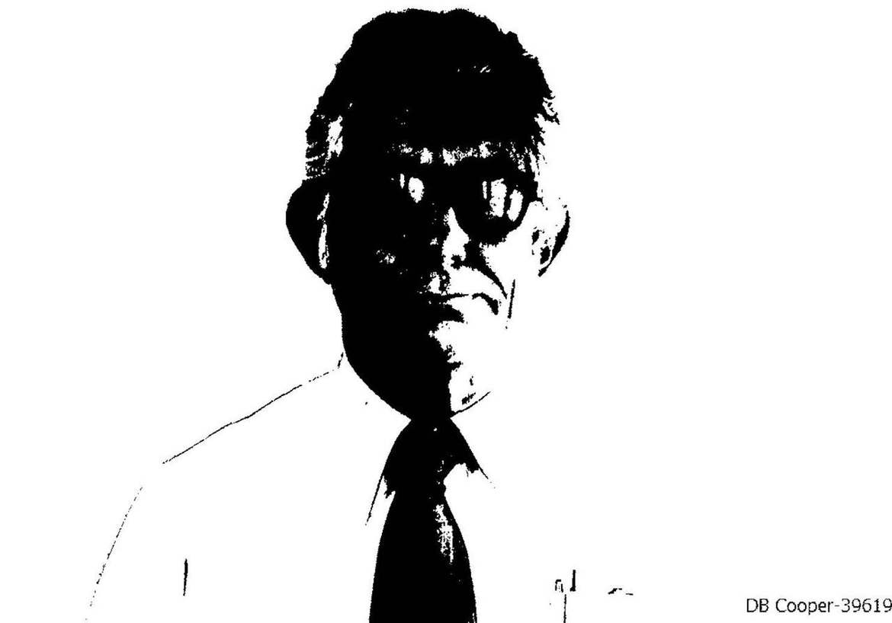
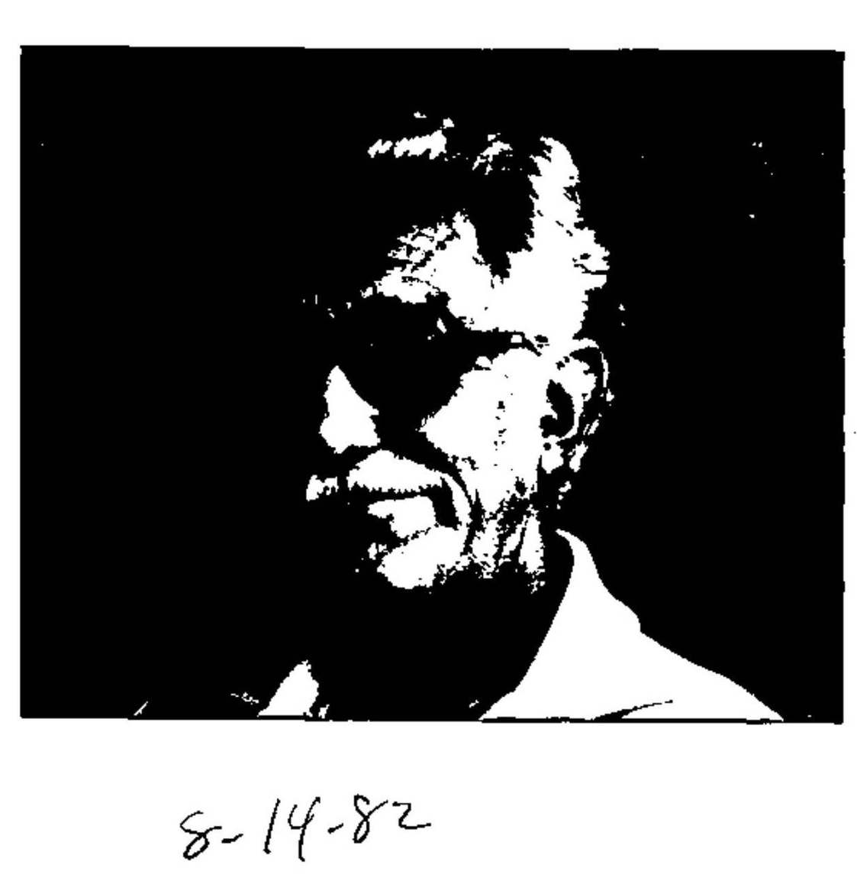
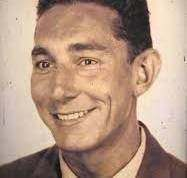
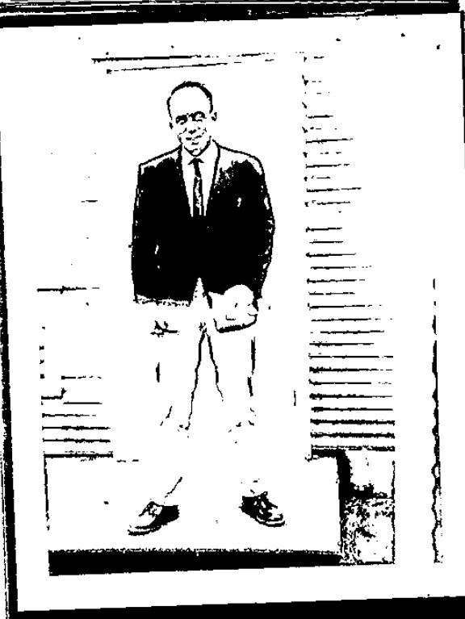
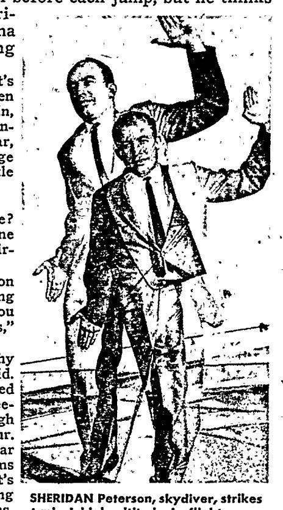
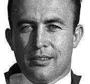
Sub 112). FBI Photo 2: 1962 Boeing club (12/123/2765). Outside the files: Portrait of Sheridan Peterson (see also 1997 clip at 77/137/33733).2. Sheridan Peterson · Sub 112 (1926–2021, Tested 2004 (Lab #040107005 PG MD) · Report
Unreleased
outside)
WHY SELECTED Former Montana smokejumper who organized the Boeing Employees Skydiving Club in 1962 (12/123–124/2765–66) and served as a 19-year-old U.S. Marine in fall 1946 (77/137/33733; Outside the files: worked as a Boeing technical editor; born 1926, died Jan. 8, 2021 per Spokesman-Review, Jan. 30, 2021). On the 2004
1A 899 Work Copy, entry 112. Sheridan Peterson is circled with"DNA ☆ →" in the left margin (90/20/39998). | |
| SWAB COLLECTION | Located in Santa Rosa, California via November 2003 leads (101/123– 125/45576–80) and interviewed/swabbed by San Francisco agents (77/190– 193/33531–34; 77/224–225/33573, 33575). His name survives unredacted on his 1997 China skydiving clippings (77/131/33716; 77/137/33733) and on the SE 164A-81-DNA index (89/196/39641). |
DNA RECORD & An FD-192 dated May 12, 2004 (owning office San Francisco) logs 1B6:
"SECONDARY EVIDENCE FROM FBI LAB LABELED AS LAB # 040107005 PG MD AS FOLLOWS: K1, 2 PCR EXTRACTED DNA TUBES, 1 PROFILER PLUS AMPLIFIED DNA TUBE, 1 COFILER AMPLIFIED DNA TUBE; K5, 1 PCR EXTRACTED DNA TUBE" (77/166/33499), and Seattle's DNA index logs 1D 14: "LAB#040107005 PG MD LABORATORY NOTES FOR [REDACTED] MD 52PGS 1 FILMS 1
CD" (89/196/39641). Linking 040107005 PG MD / 1B6 / 1D 14 to Peterson is [inference] from the San Francisco owning office and timing; the final Lab report text was withheld.
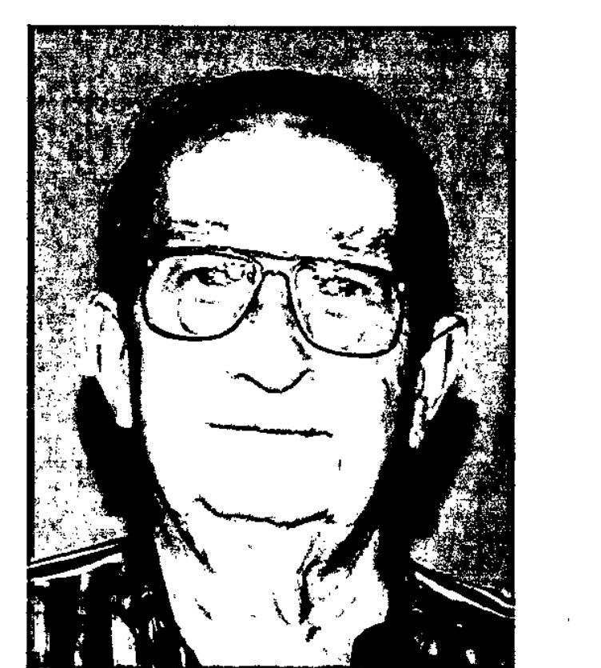
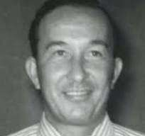
Jason Thomas Langseth · Sub 327 (b. 1934) Excluded · 1/31/2005 (Lab #041208012 QB MD)
WHY SELECTED Circled on the 2004 1A 899 Work Copy ((327) Jason T. Langseth, 90/30/40008). In the July 29, 2004 EC (77/244/33600; full subfile at 107/82– 142/48740–48804), Seattle noted he was identified by two individuals, resembled the UNSUB, had military jump experience, spoke of the "perfect crime," was partly cooperative in 1972 and 1977 but uncooperative in 1979 (refusing a polygraph, 107/85–86/48743–44), had an alibi found at least partly false (fictitious Abco sales contacts on 11/24/1971, 107/112–129/48774–91), and was re-tipped in 1993 after Unsolved Mysteries (107/82–84/48740–42).
SWAB & DNA Interviewed and voluntarily swabbed (K2, logged as 1B7) at Shelton, Washington
on December 3, 2004 (77/167/33500; 77/255–257/33614–16). Under Lab No. 041208012 QB MD (January 31, 2005, 77/263–264/33622–23), specimen K2 was excluded as a potential contributor to the Q40/Q41 (Tie/Clip) mixture. (His 9-locus Profiler Plus genotype table was left unredacted on 77/264/33623 and is omitted here per privacy rules; 38 pages of lab notes are logged as 1D 15 at 89/196/39641. Note that 1B8 at 77/168/33501 logs two K2 tubes plus one K3 tube.)
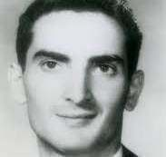
Subfile 245 withheld in Vault PDFs).4. Fred Angelo Catalano · Sub 395 (b. 1935; d. Lead Set 7/29/2004 to Newark · No
Return in Files
2006 outside)
WHY SELECTED Circled on the 2004 1A 899 Work Copy ((395) Fred Angelo Catalano, 90/34/40012). Former Eugene, Oregon resident, "pilot trained" (77/245/33601), hired by TWA at Los Angeles in May 1962 as a cabin cleaner and helper (94/156/42215) and later a TWA flight purser who had a one-week gap in his attendance record around November 24, 1971 (77/245/33601; 110/617– 620/50356–65). Shown his photograph (Subfile 245, 104/205/47167; 110/619/50364), one Flight 305 witness stated it bore "a very strong resemblance to the UNSUB" (77/245/33601), while other witnesses could not identify him (104/119/47073; 104/205/47167).
2004 DNA LEAD On July 29, 2004, Seattle set an action lead to the Newark Division to locate Catalano at his last known address in Egg Harbor Township, New Jersey and obtain a buccal swab (77/242/33598; 77/245/33601; 77/247/33603). No return communication from Newark appears in the released files (Outside the files: public death records list Catalano's death in 2006).
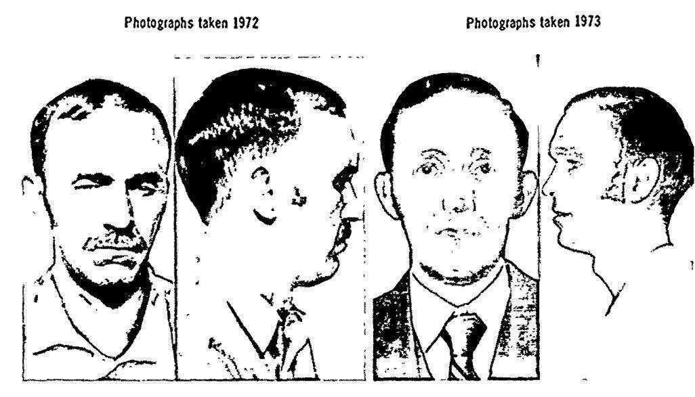
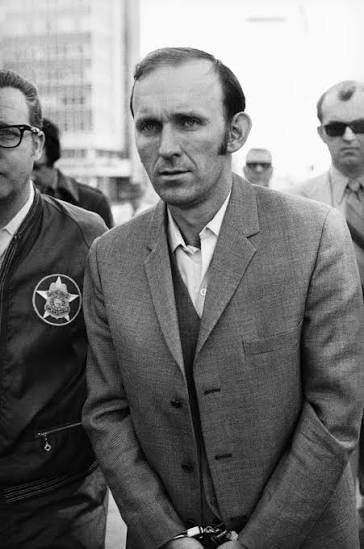
I.O. 4624 (8/26/1974, 9/43/740). Outside the files: Richard Floyd McCoy Jr. in custody (April 1972).5. Richard Floyd McCoy Jr. · Sub 386 Witness/Relative Declined 10/14/2004 · Outside Update
(2024–2025)
(1942–1974)
1A 899 NOTE VS. On the 2004 1A 899 Work Copy (90/33/40011), entry 386. Richard
Floyd McCoy, Jr. is not circled and is graded SE-P (strongly eliminated by prints) with a 4-line note summarizing a witness placing him in Salt Lake City on 11/23/1971 (BYU class) and at home in SLC on 11/25/1971 at 10 AM ("14 hrs after Norjak"). In the July 29, 2004 EC (77/245–246/33601–02), Seattle wrote that "McCoy never claimed to have been COOPER, and there was significant differences in methodology between the two crimes," but sought DNA anyway because those differences "can be partially explained as a possible natural
| refinement of methods," setting Lead 4 to Salt Lake City to request personal items (77/247/33603). | |
| 2004 REFUSAL | On October 14, 2004, Salt Lake City interviewed a relative/witness who declined to provide any item for DNA testing (77/253/33612). |
OUTSIDE THE FILES Outside the files: Per Cowboy State Daily (Feb. 22, 2026), researcher Dan Gryder (2022–2026) located a parachute rig in an outbuilding on the McCoy family property in North Carolina in 2022 that the FBI took into custody in 2024 and returned to McCoy's
son, Richard McCoy III, in December 2025. McCoy III also reportedly gave his own DNA sample to the FBI, and an agent reportedly told him a DNA sample was degraded (~7 of 23 markers).
Group B · Tip-Driven Cases (2003–2011)
Aside from the 2002–2004 audit of Subfiles 1–500 + Sub 1055 (after which no later systematic review of the remaining subfiles appears in the released files), the other seven DNA cases between 2003 and 2011 were tip-driven—initiated in response to incoming leads from companions, relatives, authors, or field offices:
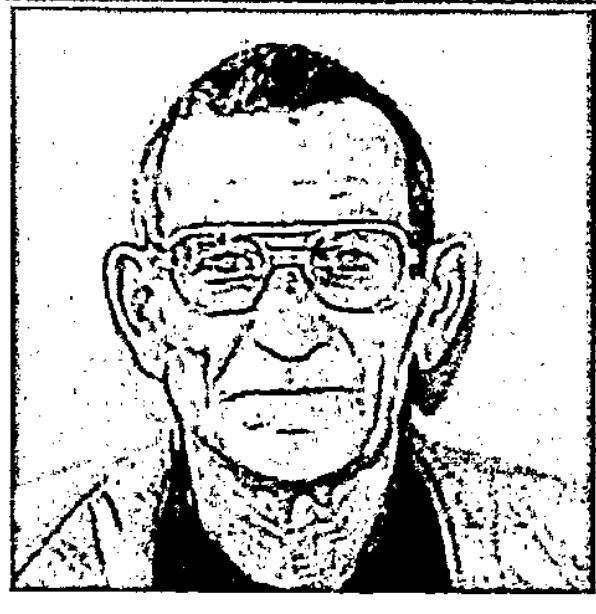
6. Arthur Burge Derham · PX 164-571 No DNA on Denture/Hair/Hat (2004) · Eliminated by
Prints (3/3/2005)
(1933–1998)
1985 & 1989 FILE First tipped to Phoenix FBI in September 1985 (PX 164-571, 47/346–
349/19772–75). An unrelated September 14, 1989 interview at Superior Training
| Services in Apache Junction, Arizona (77/214–217/33560–63) was a witness interview concerning student-loan fraud and made no mention of D.B. Cooper. | |
| 2002–2004 COMPANION TIP | After Derham died of cancer on July 20, 1998 at Mesa Lutheran Hospital (77/202/33545), his longtime female companion (surname Warcolaunredacted at 77/223/33570) contacted the FBI stating he had been born February 7, 1933 in Knoxville, Illinois as Arthur Boy Anders (77/202/33545), served as an 82nd Airborne paratrooper (77/203/33546), confessed to the hijacking with the ransom money "hidden at the landing site but not retrieved" (77/202/33545), and turned over his upper denture ( 1B2 / K2), hairs (1B3 /K3), and hat (1B4 / Q53, 77/237/33592; 77/194–205/33535–48). |
DNA & PRINT Under Lab No. 040123006 PG MD (March 29, 2004, 77/235–236/33590–
91; 15 pp. lab notes logged as 1D 13 at 89/196/39641), no detectable nuclear DNA was recovered from denture K2 or hair K3. Under Lab No. 040219012 PG MD (April 30, 2004, 77/237–238/33592–93; secondary evidence 1B10 logged 1/22/2007 at 77/262/33621), no detectable DNA was recovered from hat Q53. On March 3, 2005, the Latent Print Unit eliminated Derham against all Flight 305 latent prints (Lab No. 040123006 PG DQ, 78/185/34045).
7. South Lake Tahoe Suspect · Sub 1059
Living third party; name & photo withheld under (b)(6)/(b)(7)(C) (77/265/33624)
(77/265–266/33624–25; Lab Work Sheet dated June 28, 2006 at 89/198/39643).
DNA RESULT In a Laboratory report dated October 4, 2006 (77/267–268/33626–27, laboratory number and specimen designation redacted), the suspect's swab was typed with both AmpFlSTR Profiler Plus and AmpFlSTR COfiler and excluded as a potential contributor to the Q40/Q41 (Tie/Clip) mixture.
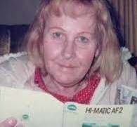
8. Barbara / Robert Dayton · 1B27–1B29 Hairs, Brush & Envelopes Logged 8/21/2006 · No Lab
Report in Files
(1926–2002)
2006 On August 15–16, 2006, Seattle interviewed two individuals from Puyallup, INVESTIGATION Washington at the Seattle FBI office (1145 Broadway) regarding Barbara Dayton (born Robert E. Dayton on May 10, 1926; died 2002), a former Merchant Mariner and "proficient pilot" who "learned how to parachute from taking a class" (52/214/21885), underwent gender reassignment surgery in 1969, was upset she could not obtain a commercial pilot's license (52/215/21886), and allegedly claimed to have hijacked Flight 305 disguised as a man (52/214–219/21885–91).
EVIDENCE & FATE On August 21, 2006, Seattle acquired 1B27 HAIR SAMPLES, 1B28 HAIR
Excluded · 10/4/2006 (Lab # Redacted)
SWAB COLLECTION Opened as SE 164A-81-Sub 1059 (77/265/33624). On June 22, 2006, an agent at the Las Vegas Division's South Lake Tahoe Resident Agency ("Las Vegas, South Lake Tahoe RA," 77/265/33624) collected buccal swabs from the suspect
BRUSH, and 1B29 (two postmarked envelopes from "Pvt. Robert E. Dayton" and "Bob Dayton," 52/219–221/21891–93). The August 30, 2006 FD-192 intake sheets for 1B27 and 1B28 carry the standard typed Anticipated Disposition: DESTROY entry (52/220–221/21892–93), and no DNA laboratory report appears in the released files.
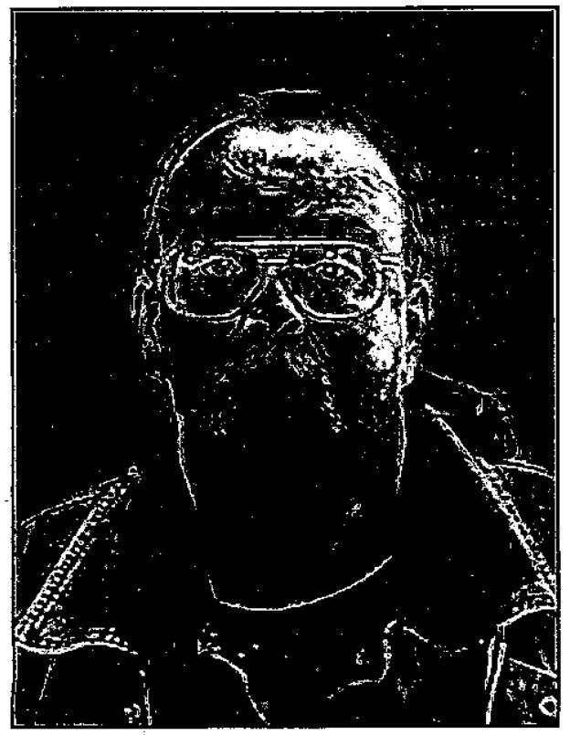
9. Lyle Collins (Clark) Franklin · Sub 1060 (1949– Dropped Before DNA Testing ·
5/7/2007
2007)
APRIL 2007 LEAD After Franklin died in Anchorage, Alaska on March 31, 2007, a tipster told Portland FBI that Franklin claimed to be D.B. Cooper (52/222–225/21894–97). On April 30, 2007, Seattle opened Sub 1060 and set an urgent lead to Anchorage to obtain blood or tissue samples from the Alaska Medical Examiner's Office for DNA comparison (77/287–290/33647–50).
WHY DROPPED On May 7, 2007, Anchorage reported (52/226–227/21898–99) that Alaska DMV and criminal records showed Franklin was born May 19, 1949 (making him 22 years old in November 1971 [inference]) and that the tipster was not credible
(also claiming Franklin was a mob hitman who murdered Jimmy Hoffa, 52/227/21899).
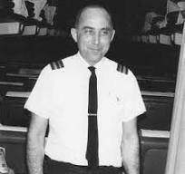
10. Kenneth Peter Christiansen · Sub 1061 7 DNA Tubes Logged (Lab #070816002, 6/8/2011) (1926–1994, outside) [inference] · Report Unreleased
HOW SURFACED Northwest Airlines flight attendant from the 1960s to the early 1990s (52/173/21826). First tipped to Minneapolis FBI in April 2004 (FD-302 dated 4/30/2004 at 52/173/21826; cover EC dated 5/4/2004 at 52/172–179/21825– 32) after an interviewee (relationship redacted) saw "one of those television shows about unsolved crimes"; Outside the files: WWII paratrooper, NWA purser, Bonney Lake resident, tipped by his brother Lyle after a History Channel broadcast). On August 8, 2007, Seattle opened Sub 1061 after Christiansen was surfaced "by a human source in the New York Division" (77/291/33651; Outside the files: author Geoffrey Gray and PI Skipp Porteous).
2007 SUBMISSION On August 8, 2007, Seattle asked the Lab to test "the collected items contained in & 2011 DNA TUBES the two enclosed envelopes" (77/291–292/33651–52). While the resulting Lab report was not included in the Vault release, an FD-192 dated June 8, 2011 logs SE 164A-81-DNA-1B13: "SECONDARY EVIDENCE: SEVEN(7) TUBES RECEIVED FROM THE FBI NUCLEAR DNA UNIT FBI LAB #070816002 *REFERENCE: (Q54) ENVELOPE; (Q54.1) STAMP; (Q55) BAG CONTAINING UNKNOWN SUBSTANCE; (NE1) BUSINESS CARD; (NE2) BUSINESS CARD;" (77/304/33666). Linking 1B13 / Lab #070816002 to Christiansen is [inference] from the August 2007 envelope submission and Lab number prefix (070816... = Aug. 16, 2007).
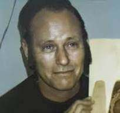
Q67–Q73 not imaged in Vault PDFs).11. Lynn Doyle ("L.D.") Cooper · Sub 1062 Excluded as Major Contributor (12/10/2010) · 19
Items Submitted 8/16/2011
(1931–1999, outside)
2010 FAMILY DNA Tipped in 2009 (Outside the files: Korean War veteran and leatherworker tipped TEST by his niece Marla Cooper). On December 10, 2010 (77/296–298/33658–60, lab number redacted), the FBI Laboratory typed buccal swabs from two female biological relatives (K7 and K9) using Profiler Plus and COfiler and reported: "specimen [redacted] is excluded as being a major contributor of the DNA obtained from specimen Q40/Q41. However, no comparison information can be provided with regard to specimen [redacted] being [redacted] the minor contributors to specimen
Q40/Q41" (77/297/33659; linked to L.D. Cooper via the report's subfile routing to SE 164A-81-1062 at 77/296/33658 and follow-up EC at 77/313/33675).
2011 GUITAR On March 23, 2011, Seattle submitted a guitar strap (1B32 / Q56) "handled
by" L.D. Cooper (77/299/33661), which yielded no latent prints of value on July 14, 2011 (Lab #110330009 QB ABW, 77/309/33671). On August 16, 2011 (77/312–314/33674–76), Seattle submitted 19 personal items (1B8–1B10) to obtain L.D. Cooper's direct DNA profile against the two minor contributors on Q40/Q41 (Tie/Clip). Acknowledged on August 31, 2011 under Lab No. 110822002 QB as Q64–Q89 (77/315–316/33677–78: foot file, glasses, wallet insert with Medicare card, photos, napkin/straw, Fixodent tube, two combs, toothbrush, two nail files, soap dish, razor covers, toothpaste, bag, six inhalers, and three bottles), no resulting Lab report appears in the released files.
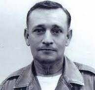
12. William Pratt Gossett (1930–2003, Excluded · 6/17/2011 (Lab #110330009 QB outside) ACO)
MARCH 2011 Outside the files: Decorated military veteran, jumper, and Ogden, Utah radio host SUBMISSION who later became a Benedictine priest ("Father Wolfgang") and reportedly confessed to his sons and a retired judge before his death in 2003. In the March 23, 2011 EC that submitted L.D. Cooper's guitar strap (77/299–303/33661–65), Seattle submitted six personal items from Gossett (1B33) under Lab No. 110330009 QB: three wristwatches (Q57, Q58, Q59), a watch band (Q60), and two rings (Q61, Q62).
DNA EXCLUSION Under Lab No. 110330009 QB ACO (June 17, 2011, 77/306–307/33668–
69), wristwatch Q58 yielded a multi-person DNA mixture with a resolvable major male contributor (assumed to be Gossett), which was excluded as a potential contributor to the Q40/Q41 (Tie/Clip) mixture (77/306/33668).
Group C · Featured Sidebar: "X" — His Wife's Suspicions, the May 14, 2003 Photo Elimination, and the Orchid Cellmark DNA Report (52/84–106/21697–21721)
Buried in Part 52 (52/84–106/21697–21721, serialized as SE 164A-81-9411, 9412, and 9413) is the only privately generated STR DNA profile in the entire D.B. Cooper file. Across three letters dated April 5, April 29, and May 22, 2003, an attorney writing from Holden, Maine on behalf of "X"'s wife (who had hired a private investigator and forensic experts after suspecting her husband of other old crimes, 52/85/21698; 52/89–92/21702–05) presented the case for testing "X":
Background, 8-year college education, and the attorney's Boeing 727 / West Coast pitch ( 52/87–88/21700–01 ; 52/94/21707 ; 52/97/21711 ): Because "X" was a living private citizen in 2003 accused of uncharged crimes, specific identifying markers in his military extract are omitted here. His National Personnel Records Center sheet lists MILITARY AND CIVILIAN EDUCATIONAL LEVEL: College (8) (52/97/21711 —an 8-year college education [inference]), and the attorney noted he was a successful professional whose background made them doubt he could commit violent crimes until a former FBI Quantico profiler told them that a "sociopathic criminal, he said, can be quite functional and successful in normal life" (52/94/21707). On the "Background and Skills" sheet enclosed with the April 5, 2003 letter (52/88/21701) and supplemented on April 29, 2003 (52/94/21707), the attorney wrote verbatim that "X" served two full years in the U.S. Air Force at a northern California base (identified on 52/94/21707 as Travis Air Force Base) and pitched the following theory: "He was familiar with Boeing 727s, with their rear steps that could be lowered from the inside, as these were used in Vietnam at the time he was in the Air Force.... X learned to fly when he was at [redacted] in northern California, and would have been familiar with other bases on the West Coast (such as McChord near Seattle). He had visited Portland, and in flying would have used aviation maps of the region" (52/88/21701). The attorney added that while "X" did not jump in the Air Force, in civilian life in the 1960s he became a proficient skydiver, held a private pilot's license, had "good knowledge of chemistry and explosives," and was an Eagle Scout inducted into the Order of the Arrow after passing a solo Smoky Mountains survival test with only a compass, one match, and an egg (52/88/21701). The Thanksgiving 1971 gap and the sudden end of his money troubles ( 52/88–89/21701–02 ): His wife ("something of a pack rat" who kept boxes of household records back to the 1960s) reconstructed an extensive timeline of his whereabouts across decades, but found "our records show nothing for the period from November 23–28, 1971" —and noted he frequently insisted on going off alone on four-day holiday weekends (52/88–89/21701–02). Before November 1971, "X" had been spending substantial unaccounted-for sums of money, creating rising tension with his wife; "However, shortly after the Cooper skyjacking, all money problems ceased completely and never arose again" (52/89/21702). The four episodes that made his wife suspect he was D.B. Cooper ( 52/90–91/21703–04 ):
1. The 1997 disappearances article ( 52/90/21703 ): In 1997, already suspecting him of other old crimes, his wife read him an article on famous disappearances (Jimmy Hoffa, Madalyn Murray O'Hair, D.B. Cooper) to test his reaction to another part of the piece. Instead, "it was the part about D. B. Cooper that interested him, and he showed a surprising amount of knowledge about the case — quite detailed knowledge about a case then almost 30 years old."
2. His uncharacteristic reaction at a mid-1970s D.B. Cooper movie ( 52/90/21703 ): That exchange made her recall going with him to a mid-1970s movie about D.B. Cooper that he had been eager to see immediately upon release. Normally reserved and unemotional, "at this movie, he was on the edge of his seat, his face aglow, laughing at all the jokes. His reaction was so oversized and unusual that [she] remembers it much better than she does the movie."
3. The peculiar mid-1970s tour of Portland International Airport ( 52/90–91/21703–04 ): Also in the mid-1970s, he traveled to California on business, drove up to Portland, and asked her to fly out to meet him. When she landed at Portland International Airport, he "insisted on giving her a full tour of the airport, as if it were one of the major tourist sites of the city" and "was very enthusiastic about showing it to her."
4. The November 24, 1999 Atlanta traffic jam and 28th-anniversary radio broadcast ( 52/91/21704 ): On the night of November 24, 1999, while gridlocked in a Thanksgiving traffic jam outside Atlanta en route to North Carolina, "X" was in "a really foul mood, one that threatened to spoil the whole weekend." Without warning, the car radio news announcer said, "Do you know what tonight is? Tonight is the twenty-eighth anniversary of D. B. Cooper," and told a brief tribute joke. "Immediately X's mood changed, and changed totally, though the traffic remained horrible for some time. X immediately became very cheerful and upbeat, and he remained 'up,' i.e., not just in a better mood but noticeably happier than normal, not only for the rest of the drive but for the entire weekend." When his wife then read books on the hijacking, "Everything she read, from Cooper's behavior to the phrases and expressions he had used, reminded her forcefully of [X]."
The Orchid Cellmark DNA report ( 52/86/21699 ; 52/101–105/21716–20 ): From his wife, the team obtained a stained white handkerchief (labeled "A") with "X"'s blood on it and submitted it alongside one of three swabs (labeled "B") to Orchid Cellmark (Germantown, Maryland; received November 14, 2002, report dated December 2, 2002, case number redacted, addressed to a redacted addressee in Chicago, Illinois, 52/102/21717). Orchid Cellmark tested the extracts with the AmpFlSTR Profiler Plus and COfiler kits (allele tables redacted on 52/104–105/21719–20) and reported: "The DNA obtained from the handkerchief labeled A is from a male. The donor of the DNA obtained from the swab labeled B is excluded as the source of the DNA obtained from this sample" (52/102/21717; a cover note on 52/101/21716 confirms "Our suspect's profile is 'A' from the handkerchief"). Chronology of the May 14, 2003 photo elimination— before the DNA profile was sent on May 22, 2003 ( 52/84/21697 ; 52/94/21707 ; 52/100/21715 ): After the attorney's first letter on April 5, 2003 (Serial 9411, 52/84–86/21697–99), the Seattle case agent spoke with him and asked for a 1971 photo, a current photo, and military/identifying info (52/84/21697). The attorney mailed those photos and records on April 29, 2003 (Serial 9412, 52/94/21707). On May 14, 2003 —before ever receiving the DNA report—the agent wrote on Serial 9412 (stamped MAY 15 2003): [handwritten, partly illegible: "...no evidence to connect... Cooper was not balding 5/14/03... Elim"] (52/94/21707) and left a voicemail for the attorney. Only then, on May 22, 2003 (Serial 9413, 52/100–105/21715–20), did the attorney enclose the Orchid Cellmark STR report, arguing that a balding skyjacker would naturally wear a hairpiece as part of his disguise and asking only that the paper profile be compared (52/100/21715). No record in the files indicates a comparison was ever performed.
May 22, 2003 Attorney Letter on "X" ("You said the suspect could not be Cooper as Cooper was not Part 52 p.100 · Bates 21715 (cropped & highlighted)
balding")
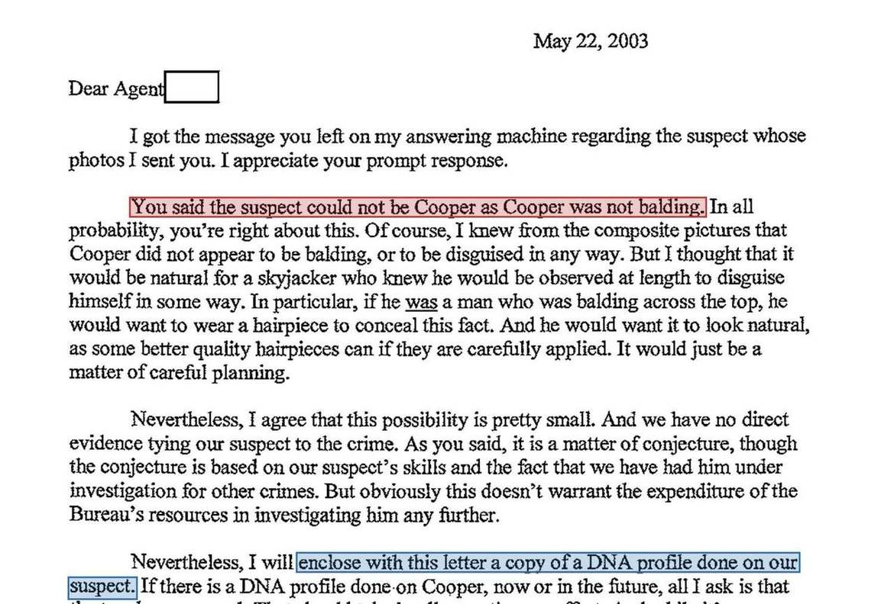
May 22, 2003 letter (52/100/21715, SE 164A-81-9413) enclosing the December 2, 2002 Orchid Cellmark STR report on "X"'s handkerchief (Item A, 52/101–105/21716–20) after the Seattle case agent eliminated "X" on May 14, 2003 (52/94/21707) off the circa-1971 photo supplied with the April 29, 2003 letter.
What's left: the unreleased bench notes (1D 889 / 1D 890), the 52/23 disposition notice, and future forensics
Three concrete questions remain open in the FBI's biological record—and every one of them maps to specific, indexed serials and 1D bulky enclosures in Seattle's file.
1. The unreleased Laboratory bench notes (1D 889 & 1D 890 at 89/219/39743 and 1D 13–15 at 89/196/39641)
On the 1A Envelope index pages in Part 89, Seattle logged the complete underlying FBI Laboratory case files (1D enclosures) that were withheld in full from the public Vault release:
SE 164A-81-1D 889 ( 89/219/39743 ): "LAB #010823017-8PGS / LAB #010904012-10PGS / 0-4 1PG" — 8 pages of notes on Lab #010823017 (the 1B23 Columbia River fabric/plastic bag submission) plus 10 pages of notes on Lab #010904012 (the August 2001 tie, tie clip, and boarding ticket submission, whose September 12, 2001 trace report at 52/7– 8/21606–07 omitted its results text). SE 164A-81-1D 890 ( 89/219/39743 ): "LAB-#010904012 HL MD — LABORATORY NOTES FOR [REDACTED] (MD) 39 PAGES, 1 CD, 1 FILM" — the 39-page Nuclear DNA Unit bench file, 1 CD, and 1 FILM from the April 2, 2002 tie/clip DNA amplification. (Because the August 23, 2001 submission EC at 52/3/21602 requested that the tie and ticket be "photographed before testing" with prints returned to Seattle, the 1 FILM may be those pre-testing photographs [inference].)
SE 164A-81-DNA-1D 13, 1D 14, and 1D 15 ( 89/196/39641 ): 1D 13 (15 pages of lab notes for 040123006, Arthur Derham), 1D 14 ("LAB#040107005 PG MD LABORATORY NOTES FOR [REDACTED] MD 52PGS 1 FILMS 1 CD" — Sheridan Peterson [inference]), and 1D 15 (38 pages of lab notes for 041208012, Jason Langseth).
Seattle 1A/1D Index Logging Unreleased Lab Bench Notes 1D 889 & 1D 890 (39 Pages, 1 CD, 1 Film) Part 89 p.219 · Bates 39743 (cropped & highlighted)
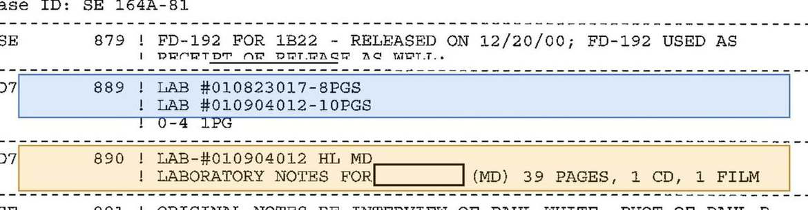
Seattle 1A Envelope log (89/219/39743) indexing 1D 889 (LAB #010823017-8PGS / LAB #010904012-10PGS) and 1D 890 (LAB-#010904012 HL MD — LABORATORY NOTES... 39 PAGES, 1 CD, 1 FILM).
2. The potentially frozen DNA extract tube (52/23/21624) — and the boilerplate caveat
On page 1 of the April 2, 2002 Nuclear DNA report on Q40/Q41 (Tie/Clip, 52/23/21624), immediately beneath the list of resubmitted specimens, the FBI Laboratory included the following disposition paragraph:
"This report contains the results of the DNA examinations. The submitted items and the probed DNA membrane will be returned to you under separate cover by overnight express. In addition to the evidence in the case, any remaining processed DNA from specimens examined by DNA analysis is also being returned to you. The processed DNA can be found in a package marked PROCESSED DNA SAMPLES: SHOULD BE REFRIGERATED/FROZEN. It is recommended that these samples be stored in a refrigerator/freezer and isolated from evidence that has not been examined." ( 52/23/21624 )
Page 1 of the April 2, 2002 Nuclear DNA Report on Q40/Q41 ("PROCESSED DNA SAMPLES: SHOULD BE Part 52 p.23 · Bates 21624 (cropped & highlighted)
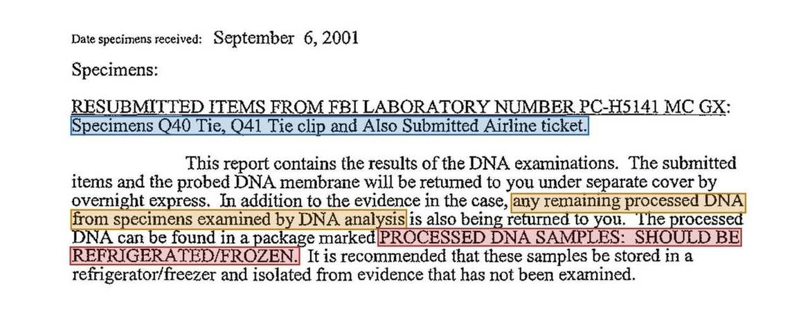
Cover page of Lab No. 010904012 HL MD (52/23/21624) showing the disposition paragraph for PROCESSED DNA SAMPLES: SHOULD BE REFRIGERATED/FROZEN.
| CRITICAL DISCLAIMER: WHY THIS PARAGRAPH COULD BE STANDARD FBI LAB BOILERPLATE Before treating 52/23/21624 as proof that a frozen tube of Q40/Q41 (Tie/Clip) DNA extract sits in Seattle's evidence freezer, two facts in thefile must be weighed: 1. The PROCESSED DNA SAMPLES: SHOULD BE REFRIGERATED/FROZEN paragraph is standard 2000s FBI Laboratory reportboilerplate: While the phrase "and the probed DNA membrane" appears only on the April 2, 2002 report (52/23/21624), the entire anyremaining processed DNA... PROCESSED DNA SAMPLES: SHOULD BE REFRIGERATED/FROZEN dispositionparagraph appears on each of the other Part 77 Nuclear DNA reports checked (77/236/33591, 77/238/33593, 77/264/33623, 77/268/33627, and 77/282/33642)—including the two Arthur Derham reports (77/236/33591; 77/238/33593) where no DNA at all was recovered (and as NUCLEAR DNA UNIT SECONDARY EVIDENCE on 77/298/33660 and 77/308/33670). Because the sentence says" any remaining processed DNA," the template paragraph was printed whether or not leftover liquid extract remained. 2. What FD-192 logs and 1D 890 can answer: When the FBI Laboratory actually returned tubes of processed DNA on later submissions,the receiving field offices logged those tubes onto FD-192 receipts in Part 77 (1B6 for 040107005 at 77/166/33499, 1B8 at77/168/33501, 1B10 for Derham at 77/262/33621, 1B12 for Weber's 11 tubes at 77/279/33639, and 1B13 for 070816002 at77/304/33666). No FD-192 logging a returned Q40/Q41 (Tie/Clip) DNA tube appears in the released files (and the 2006–2011comparisons were run against the stored 2002 STR typing results, not by re-testing physical extract). Obtaining 1D 889 and 1D 890 viaFOIA will show how much DNA was extracted and consumed in 2002, while any unreleased FD-192 for Lab #010904012 wouldshow whether a tube was returned to Seattle. | |||
|---|---|---|---|
| 3. Summary of open FOIA targets from Part 1 TARGET DOCUMENT / EXHIBIT FILE & VAULT CITE WHAT THE RECORD IS WHAT QUESTION IT ANSWERS | |||
| 1. Tie Trace & DNA Bench Notes ( 1D 889 & 1D 890 ) | SE 164A-81-1D 889 &89089/219/39743 · 52/7–8/21606–07 ·52/24/21625 | 8 pp. (010823017) + 10 pp.( 010904012) in 1D 889; 39 pp. DNAbench notes, 1 CD & 1 film in 1D 890,plus missing trace results from 9/12/2001 report. | Would provide the 9-locus ProfilerPlus allele calls and peak heights onQ40/Q41 (Tie/Clip) for direct suspectexclusions and probabilistic genotyping ( STRMix / TrueAllele), plusextraction volumes, pre-test photos ( 1FILM [inference]), and missing 2001trace results. |
2. Sheridan Peterson DNA Lab #040107005 PG Final Lab report on specimens K1/K5 Confirms Peterson's formal Lab reportReport & Bench Notes ( 1D MD (1B6) and 52 pages of bench notes (1D text and comparison details against14 ) 77/166/33499 · 14 [inference]; Peterson died Q40/Q41 (Tie/Clip).89/196/39641 1/8/2021). | |||
3. Kenneth Christiansen DNA SE 164A-81-DNA-1B13 Unreleased Lab report corresponding Reveals whether the items in the twoReport ( Lab #070816002 ) 77/291–292/33651–52 · to the 7 secondary DNA tubes logged envelopes yielded a typable profile and77/304/33666 6/8/2011 from Q54, Q54.1, Q55, whether Christiansen was excludedNE1–NE2 [inference] (died 1994). from Q40/Q41 (Tie/Clip). | |||
4. L.D. Cooper 2011 19-Item SE 164A-81-DNA-1B8– Lab report on the 19 personal items Shows whether any of the 19 itemsDNA Report ( Lab 1B10 (Q64–Q89) acknowledged 8/31/2011 yielded a direct profile of L.D. Cooper#110822002 QB ) 77/312–316/33674–78 (L.D. Cooper died 1999). and excluded him from the two minorcontributors on Q40/Q41 (Tie/Clip). | |||
5. "X" Circa-1971 Photo & SE 164A-81-9411 to The circa-1971 and 2003 photographs Allows visual evaluation of theSerials 9411–9413 Enclosures 9413 of "X" enclosed with the April 29, 2003 hairline/photo the Seattle agent used52/84–106/21697–21721 letter (52/94/21707). on May 14, 2003 to eliminate "X" prior to receiving his Orchid Cellmark DNA report. | |||
| 4. Outside the files: modern mixture deconvolution and genetic genealogy Outside the files: The threshold-based binary mixture rules that led the FBI Laboratory to downgrade Q40/Q41 (Tie/Clip) toexclusion-only in 2006 (52/284/21966) predated two major forensic developments: probabilistic genotyping ( STRMix /TrueAllele, adopted in casework prior to 2014), which models peak heights, stutter, and allele dropout on existing .fsa / .hidelectropherogram files (such as the CD in 1D 890, 89/219/39743) without consuming physical evidence, and forensic investigativegenetic genealogy (FIGG) (used in cold cases since 2018), which uses high-density SNP sequencing if physical DNA or unextracted tie/hair material survives—though deconvoluting a degraded mixture of three or more contributors remains a major technical hurdle for genealogy testing. | |||